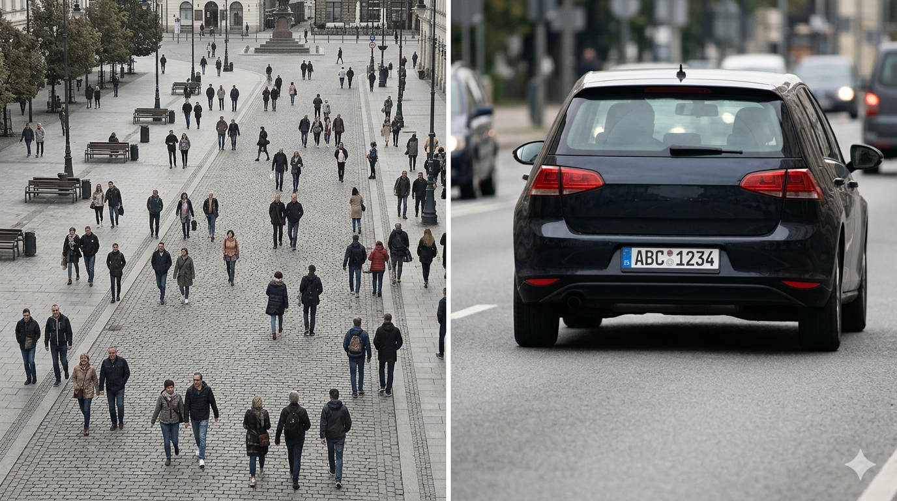

Start with the use case. Not the spec sheet.
Most computer vision projects pick the wrong camera. Not because the engineers are careless — because they start in the wrong place.
They open a spec sheet before they've defined the problem. Resolution, frame rate, sensor size, brand — these are the second question. The first question is almost always skipped: what is this camera actually supposed to see, and under what conditions?
Skip it, and no spec sheet will save you.
The same scene can need four different cameras.
A camera that counts pedestrians in a public square is nothing like a camera that reads license plates at 80 km/h. A factory inspection line has almost nothing in common with a slow-moving patrol vehicle. Same label on the box. Completely different hardware underneath.
Before you shortlist a model, answer four questions:
- 01 What are you trying to detect?Faces, plates, objects, defects, behaviors?
- 02 How fast is it moving relative to the camera?This one variable drives more decisions than any other.
- 03 How much light will you actually have?Not in the demo. At 6 a.m. in winter. Backlit at sunset.
- 04 Is the camera stationary, or moving with a vehicle?Mounted platforms and mobile ones play by different rules.

Wide or far. Pick one.
A wide-angle lens covering a public square gives you plenty of coverage — but each person occupies a handful of pixels. Reliable face recognition needs roughly 120 pixels of face width. At 40 pixels, no algorithm will rescue you. The limit isn't resolution — it's optics and geometry. An 8K sensor won't help.
Our eyes solve this by rotating, refocusing, and narrowing attention. Cameras don't. A camera has a fixed focal length. Every CV deployment is a choice about which piece of reality to sacrifice.
The variable most people miss: angular velocity.
Speed in km/h is not what your camera cares about. What matters is angular velocity — how fast the target sweeps across the camera's field of view.
A car approaching head-on at 60 km/h mostly just gets bigger. The same car crossing laterally at 30 km/h moves across the frame violently fast.
Angular velocity is low in the first case — a cheap camera handles it. In the second, you need a fast shutter, a sensitive sensor, and probably a global shutter. Different price bracket entirely.
This is why speed bumps, stop signs, and gate barriers are, in a sense, computer vision optimizations. Slow the target down and cheaper hardware starts to work.